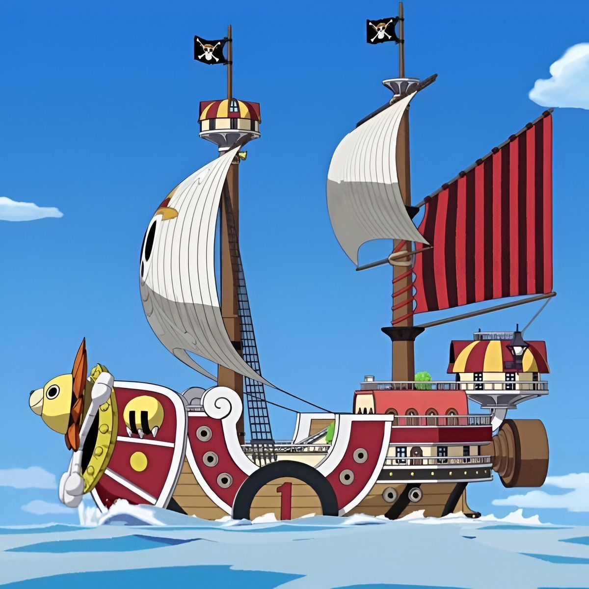
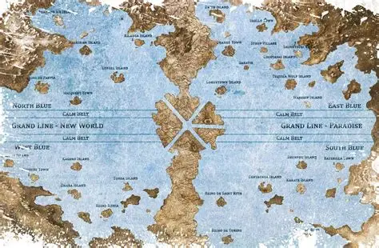
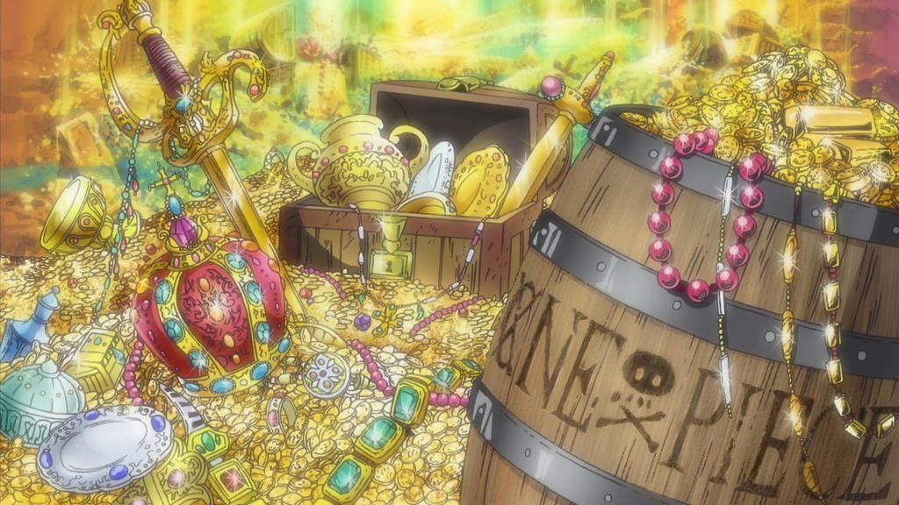

La tripulación de los Sombrero de Paja
Aviso: esta página menciona solo datos generales de los personajes, sin revelar giros importantes de la historia. Sin spoilers

Un barco, muchos sueños
Cada integrante se une a la tripulación con una meta propia. Lo que los une es la lealtad: nadie se queda atrás y todos aportan una habilidad distinta.
El capitán es Luffy, pero el equipo funciona porque cada rol cubre una necesidad del viaje: pelear, navegar, cocinar, curar, reparar el barco y descubrir secretos.

Cada isla, una prueba
En cada isla la tripulación conoce gente nueva, enfrenta peligros y aprende algo del mundo. Esas aventuras forman el corazón de la serie.
Aun cuando se separan, todos mantienen su objetivo claro y confían en volver a reunirse.

El verdadero tesoro
Más que el oro, lo que valoran es la libertad de seguir su sueño. Por eso la amistad pesa tanto como cualquier botín.
Quién es quién
| Personaje | Rol | Sueño |
|---|---|---|
| Monkey D. Luffy | Capitán | Ser el Rey de los Piratas |
| Roronoa Zoro | Espadachín | Ser el mejor espadachín del mundo |
| Nami | Navegante | Dibujar el mapa del mundo |
| Usopp | Francotirador | Ser un valiente guerrero del mar |
| Sanji | Cocinero | Encontrar el All Blue |
| Tony Tony Chopper | Doctor | Curar cualquier enfermedad |
| Nico Robin | Arqueóloga | Descubrir la historia verdadera del mundo |
| Franky | Carpintero naval | Construir un barco que llegue al fin del mundo |
| Brook | Músico | Reencontrarse con un viejo amigo |
| Jinbe | Timonel | Proteger a su gente y a su tripulación |